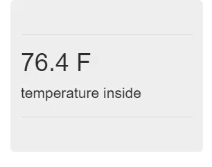
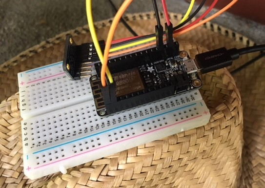

This is the second part of a series of posts which detail building an Internet-of-Things (IoT) server with flask, Python and ESP8266 microcontrollers. In this post, we'll describe server setup and microcontroller hardware used in the project.
Introduction
The IoT server project builds upon the ESP8266 WiFi weather station project and the flask app on Digigal Ocean project. In the flask app on Digital Ocean project, a flask app pulled a measurement temperature down from ThingSpeak.com and displayed the termperature on a webpage. In the ESP8266 WiFi weather station project, an ESP8266 microcontroller (connected to a temperature sensor) posted a temperature up on ThingSpeak.com. The problem with using ThingSpeak.com as an IoT platform is there are limits to how often data can be posted. Building my own IoT server with flask is an exciting and interesting project and solves the only "one data post only once every 15 seconds" limitation imposed by ThingSpeak.
Prerequisites
I previously built a single page flask app that show the temperature measured by WiFi weather stations. That single page flask app is running on a Digital Ocea cloud server. The flask app pulls a temperature data point from the ThingSpeak.com web API and displays it using flask and a jinja template. See the flask app hosted on Digital Ocean post to see the starting point for this project's flask IoT server.
{kind=link}
If you are starting from scratch, the prerequisits needed to build an Internet-of-Things server with flask and Python and ESP8266 microcontrollers are:
Server
- A Digital Ocean cloud server (just called the server from here on out). See this post and part of this post.
- A domain name hooked up to the server. See part of this post.
- PuTTY or a terminal that can SSH into the server
- The following packages
apt-getinstalled on the server:python3-pippython3-devpython3-setuptoolspython3-venvbuild-essentiallibssl-devlibffi-dev - A Python 3.6 virtual environment set up on the sever with
flaskanduwsgipip installed. See part of this post. - uWSGI and NGINX installed on configured on the server. See part of this post.. The configuration files I used can be found on github: myproject.ini, wsgi.py, sites-avialable (nginx config)
- The flask app running as a system service. See this gist for the systemd flaskapp.service file.
- SSL attached to the domain name and NGINX instance. See part of this post and this post.
The webpage produced by the flask app is below:

Hardware
The below is a list of hardware used to build the ESP8266-based WiFi weather stations. See this post and the fritzing sketch below for hardware setup.
- Adafruit Feather Huzzah ESP8266
- MCP9808 temperature sensor,BMP280 temperature sensor
- jumper wires, breadboard
- microUSB cable.
- Micropython firmware for the ESP8266 loaded on the ESP8266 board. See this post
- The following .py files (available on github) were loaded onto the board with ampy. BMP280.py, MCP9808, wifitools.py. See this post


The starting place
The flask app I built was fairly basic and mainly comprised of 2 files. The file structure on the Digital Ocean server looks like this:
~/
└── flaskapp
├── flaskapp.ini
├── showtemp.py
├── flaskapp.sock
├── flaskappenv
├── templates
│ ├── index.html
└── wsgi.py
The main file to run the flask app is showtemp.py
# showtemp.py
from flask import Flask, render_template
import requests
app = Flask(__name__)
@app.route("/")
def index():
r = requests.get('https://api.thingspeak.com/channels/254616/fields/1/last.txt')
temp_c_in = r.text
temp_f = str(round(((9.0 / 5.0) * float(temp_c_in) + 32), 1)) + ' F'
return render_template("index.html", temp=temp_f)
if __name__ == "__main__":
app.run(host='0.0.0.0')
The only jinja template used by the flask app to build web pages was in the /templates directory and named index.html:
<!-- index.html -->
<!DOCTYPE html>
<html lang="en">
<head>
<meta charset="UTF-8">
<meta http-equiv="X-UA-Compatible" content="IE=edge">
<meta name="viewport" content="width=device-width, initial-scale=1">
<title>show temp</title>
<!-- Latest compiled and minified CSS -->
<link rel="stylesheet" href="https://maxcdn.bootstrapcdn.com/bootstrap/3.3.7/css/bootstrap.min.css" integrity="sha384-BVYiiSIFeK1dGmJRAkycuHAHRg32OmUcww7on3RYdg4Va+PmSTsz/K68vbdEjh4u" crossorigin="anonymous">
<!-- Optional theme -->
<link rel="stylesheet" href="https://maxcdn.bootstrapcdn.com/bootstrap/3.3.7/css/bootstrap-theme.min.css" integrity="sha384-rHyoN1iRsVXV4nD0JutlnGaslCJuC7uwjduW9SVrLvRYooPp2bWYgmgJQIXwl/Sp" crossorigin="anonymous">
<!-- Latest compiled and minified JavaScript -->
<script src="https://maxcdn.bootstrapcdn.com/bootstrap/3.3.7/js/bootstrap.min.js" integrity="sha384-Tc5IQib027qvyjSMfHjOMaLkfuWVxZxUPnCJA7l2mCWNIpG9mGCD8wGNIcPD7Txa" crossorigin="anonymous"></script>
</head>
<body>
<div class="container-fluid">
<div class="jumbotron">
<hr class="my-4">
<h1 class="display-4"> {{ temp }} </h1>
<p class="lead">temperature inside</p>
<hr class="my-4">
</div>
</div>
</body>
</html>
With the flask app created and the domain name, nginx, uWSGI, systemd and SSL configured, the app can be started on the server with:
$ sudo systemctl start myproject
$ sudo systemctl status myproject
# [ctrl-c] to exit.
The resulting web page looks like like this:
Summary
This post detailed the server setup and microcontroller hardware used in the IoT server with flask and Python project. The server running on Digital Ocean has a domain name connected to it and is running an NGINX → uWSGI → flask web stack. The flask app currently returns a webpage with a temperature pulled from ThingSpeak.com. The hardware includes Adafruit Feather Huzzah ESP8266 microcontrollers connected to temperature sensors.
## Next steps
In the next post, we'll build a web API with flask and push temperature values up to our very own IoT server.